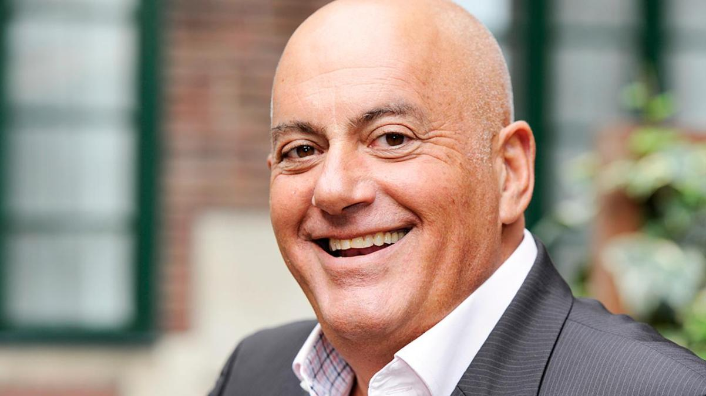

Van Gelder werd op 27 december 1950 in Amsterdam geboren. Naar eigen zeggen groeide hij op met de Amsterdamse voetbalclub AFC, waarin ook zijn vader Sal diverse functies vervulde. Hij volgde HBS-a aan het Spinoza Lyceum. Van Gelder kwam in 1972 in dienst van de TROS. Vanaf 1976 was hij tevens werkzaam voor de NOS als sportverslaggever, voor het eerst bij de Olympische Spelen van Montreal. Jack van Gelder is bekend om zijn enthousiaste manier van commentaar geven tijdens voetbalwedstrijden. Het commentaar dat hij en collega Bert Nederlof leverden tijdens het, door het Nederlands voetbalelftal gewonnen, EK van 1988 werd zelfs zo bekend dat het in de handel werd gebracht
Heden
Jack van Gelder geeft al lange tijd commentaar voor voetbalwedstrijden, hij doet dat op dit moment voor sport1. Ook geeft hij sinds kort commentaar voor een hele andere sport namelijk knikkeren. Hij is namelijk sinds januari 2021 ook te horen bij Marble Mania.
Dennis Bergkamp
Op het WK van 1998 gaf Jack van Gelder commentaar op de uiterst spannende wedstrijd: Nederland - Argentinië. Wedstrijd ging om een plek in de halve finale. Op het moment dat Dennis Bergkamp de 2-1 maakt gaat Jack van Gelder helemaal uit z'n dak.

Ziggo Sport
Na zes jaar bij Ziggo sport gewerkt te hebben stopt Jack van Gelder ermee. Ziggo sport verglend het contract van Van Gelder namelijk niet. Wat hij nu wil gaan doen is een groot vraagteken, er zijn wel een aantal opties die hij overweegt. Hij laat weten dat hij mogelijk documentaires of andersoortige talkshows gaat maken. Als zijn werk als presentator zou stoppen accepteert hij dat. ''Waar eduren dichtgaan gaan deuren open'', laat Van Gelder weten. Al zou het hier stoppen kan hij terug blikken op een rijke televisiecarrière van bijna vijftig jaar. Dankzij de NOS heeft hij heel de wereld gezien. Hij is bij grote evenementen geweest, sinds 1976 is hij bij iedere Zomerspelen geweest tot en met Londen. Ook heeft hij ieder EK en WK van Nederland meegemaakt waar Nederland aan mee deed.
Na zes jaar bij Ziggo sport gewerkt te hebben stopt Jack van Gelder ermee. Ziggo sport verlengt het contract van Van Gelder namelijk niet. Wat hij nu wil gaan doen is een groot vraagteken, er zijn wel een aantal opties die hij overweegt. Hij laat weten dat hij mogelijk documentaires of andersoortige talkshows gaat maken. Als zijn werk als presentator zou stoppen accepteert hij dat. ''Waar deuren dichtgaan gaan deuren open'', laat Van Gelder weten. Al zou het hier stoppen kan hij terugblikken op een rijke televisiecarrière van bijna vijftig jaar. Dankzij de NOS heeft hij heel de wereld gezien. Hij is bij grote evenementen geweest, sinds 1976 is hij bij iedere Zomerspelen geweest tot en met Londen. Ook heeft hij ieder EK en WK van Nederland meegemaakt waar Nederland aan mee deed.